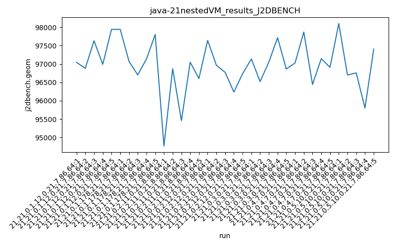

java-21 J2DBENCH
Context at bottom
/home/jvanek/git/benchmarks-in-nested-virtualisation-toolchain/final_results/nestedVM_results/nestedVM_results_J2DBENCH
java-21
J2DBENCH
nestedVM_results_J2DBENCH
final score
Expected number of java-21 JDKs: 7
1st avgmed_alljdks_metric:
/home/jvanek/git/benchmarks-in-nested-virtualisation-toolchain/final_results/result_processing.py /home/jvanek/git/benchmarks-in-nested-virtualisation-toolchain/final_results/nestedVM_results/nestedVM_results_J2DBENCH j2dbench.geom False
values: [97044, 96883, 97631, 96990, 97941, 97941, 97071, 96704, 97136, 97804, 94769, 96872, 95461, 97049, 96604, 97641, 96965, 96773, 96237, 96737, 97137, 96522, 97051, 97714, 96863, 97027, 97870, 96443, 97145, 96909, 98099, 96699, 96758, 95802, 97403]

Expected number of iterations: 5
final number of values: 35 out of 35
Pass rate: 100.0%
values: (94769, 98099, 96962.71428571429, 96990)

** accuracy from all jdks and runs
more is better
MIN: 94769
MAX: 98099
AVG: 96962.71428571429
MED: 96990
Relative differences 1:
MIN-MAX: 3.0 %
MIN-AVG: 2.0 %
MIN-MED: 2.0 %
MAX-MIN: -4.0 %
MAX-AVG: -1.0 %
MAX-MED: -1.0 %
AVG-MED: 0.0 %
stored to java-21.properties. sort | uniq that!
2nd avgmed_by_jdk_metric:
values: [97297.8, 97331.2, 96151.0, 96870.6, 97057.4, 97078.8, 96952.2]

values: [97044, 97136, 96604, 96773, 97051, 97027, 96758]

values: (96151.0, 97331.2, 96962.71428571429, 97057.4)
values: (96604, 97136, 96913.28571428571, 97027)

** accuracy from all jdks where runs were avged
more is better
MIN: 96151.0
MAX: 97331.2
AVG: 96962.71428571429
MED: 97057.4
Relative differences 1:
MIN-MAX: 1.0 %
MIN-AVG: 1.0 %
MIN-MED: 1.0 %
MAX-MIN: -1.0 %
MAX-AVG: -0.0 %
MAX-MED: -0.0 %
AVG-MED: 0.0 %
stored to java-21.properties. sort | uniq that!
** accuracy from all jdks where runs were medianed
more is better
MIN: 96604
MAX: 97136
AVG: 96913.28571428571
MED: 97027
Relative differences 1:
MIN-MAX: 1.0 %
MIN-AVG: 0.0 %
MIN-MED: 0.0 %
MAX-MIN: -1.0 %
MAX-AVG: -0.0 %
MAX-MED: -0.0 %
AVG-MED: 0.0 %
stored to java-21.properties. sort | uniq that!
/home/jvanek/git/benchmarks-in-nested-virtualisation-toolchain/final_results/nestedVM_results/nestedVM_results_RADARGUNs3
java-21
J2DBENCH
/home/jvanek/git/benchmarks-in-nested-virtualisation-toolchain/final_results/nestedVM_results/nestedVM_results_DACAPO
java-21
J2DBENCH
/home/jvanek/git/benchmarks-in-nested-virtualisation-toolchain/final_results/nestedVM_results/nestedVM_results_JMH
java-21
J2DBENCH
/home/jvanek/git/benchmarks-in-nested-virtualisation-toolchain/final_results/nestedVM_results/nestedVM_results_SPECJBB
java-21
J2DBENCH
/home/jvanek/git/benchmarks-in-nested-virtualisation-toolchain/final_results/nestedVM_results/nestedVM_results_RADARGUNs1
java-21
J2DBENCH
pass rates:
nestedVM_results_J2DBENCH=100.0%
Context:
- nestedVM_results
- J2DBENCH